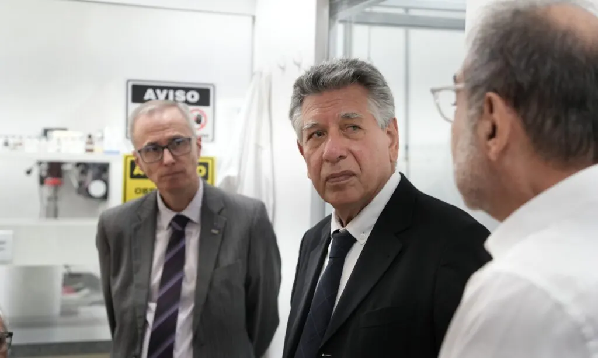
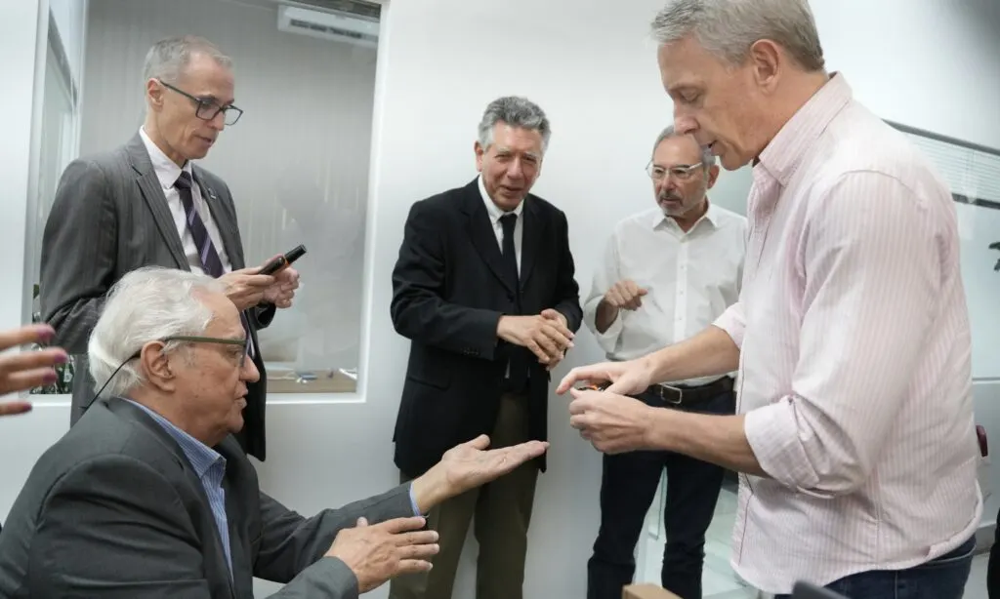
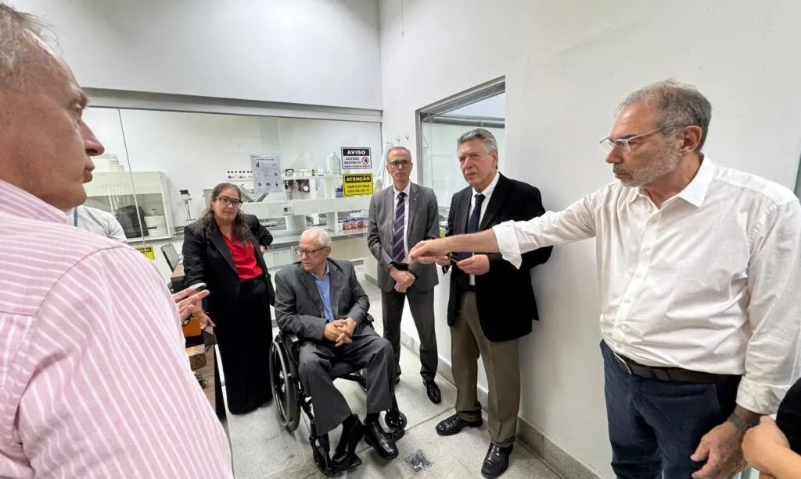
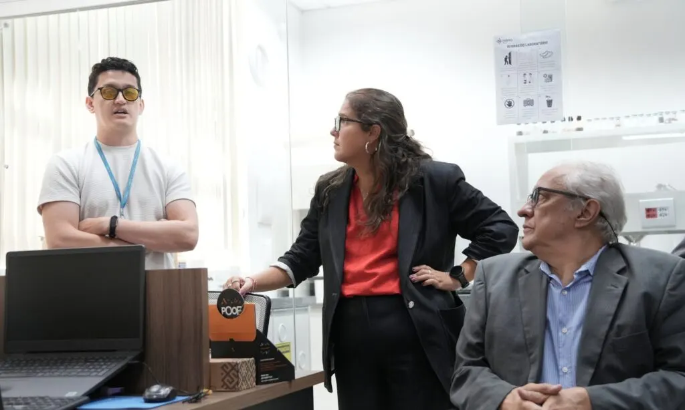

NanoBrasil recibió hoy (28) al presidente de Finep, Luiz Antônio Elias, en una visita al laboratorio y a los frentes de investigación, desarrollo e innovación de la empresa. Al conocer la estructura y el trabajo desarrollado, Elias destacó la nanotecnología como un área decisiva para la inserción tecnológica de Brasil en un entorno internacional cada vez más competitivo.
“Esta empresa está marcando la diferencia, sin duda, en todo el escenario brasileño”, afirmó el presidente de Finep. Según Elias, la capacidad encontrada en NanoBrasil demuestra el potencial brasileño para actuar en la frontera del conocimiento y acercar ciencia, universidades y empresas.

El paso por NanoBrasil formó parte de la primera visita de Elias al BH-TEC. Antes de recorrer las estructuras del Parque, participó en una reunión con el presidente del BH-TEC, Marco Crocco; el rector de la UFMG, Alessandro Moreira; y Santuza Teixeira, integrante del comité gestor del CTVacinas y coordinadora del CTV-RNA.
Durante la visita a NanoBrasil, Elias resaltó la importancia de estructuras capaces de transformar el conocimiento científico en desarrollo tecnológico y ampliar la capacidad competitiva del país.
“Es un movimiento importante que hemos hecho desde el gobierno federal: apoyar instituciones como esta, que puedan marcar la diferencia en un mundo tan competitivo como el de la nanotecnología. Tenemos la capacidad de emprender junto con universidades y empresas para apostar por la frontera del conocimiento”, afirmó.
Frontera del conocimiento
El presidente de Finep también relacionó el dominio de tecnologías emergentes con la posición que Brasil puede ocupar en un escenario internacional marcado por rápidas transformaciones.
“Brasil necesita insertarse tecnológicamente en un escenario cada vez más disruptivo, y la nanotecnología representa esa opción”, dijo Elias.

La visita y la evaluación del presidente de Finep representan también un reconocimiento al trabajo desarrollado por NanoBrasil para transformar desafíos presentados por el mercado en proyectos de investigación, desarrollo e innovación.
“Fue un orgullo mostrar todo nuestro trabajo, desde la investigación, el desarrollo y la innovación hasta la forma en que enfrentamos los desafíos que el mercado nos presenta. Es muy importante recibir a una persona con esta responsabilidad y conocer su percepción sobre lo que estamos construyendo”, afirmó el director comercial de NanoBrasil, Oscar Geigner.

“Ver este interés por la nanotecnología y por lo que estamos desarrollando muestra la relevancia de acercar el conocimiento científico a las necesidades concretas de las empresas”, añadió.
Esta conexión está entre los frentes centrales de actuación de NanoBrasil, que articula conocimiento científico, plataforma nanotecnológica y demandas industriales para desarrollar aplicaciones orientadas a productos, procesos, eficiencia y competitividad.
Ciencia en otros frentes
La visita a NanoBrasil formó parte de una agenda más amplia en el BH-TEC. Luiz Antônio Elias también conoció el CTVacinas y la estructura del FabNS.
Al comentar el conjunto de las visitas, el presidente de Finep destacó la calidad científica encontrada en el Parque.

“En todas las áreas que vimos aquí, en nano, en vacunas y en áreas relacionadas, hemos encontrado una capacidad de conocimiento muy cercana a la frontera del conocimiento”, afirmó.
La agenda se realizó después del encuentro de Elias con líderes del BH-TEC, la UFMG y el CTVacinas, en un acercamiento orientado tanto a los proyectos ya apoyados como a la discusión de futuras posibilidades de cooperación.